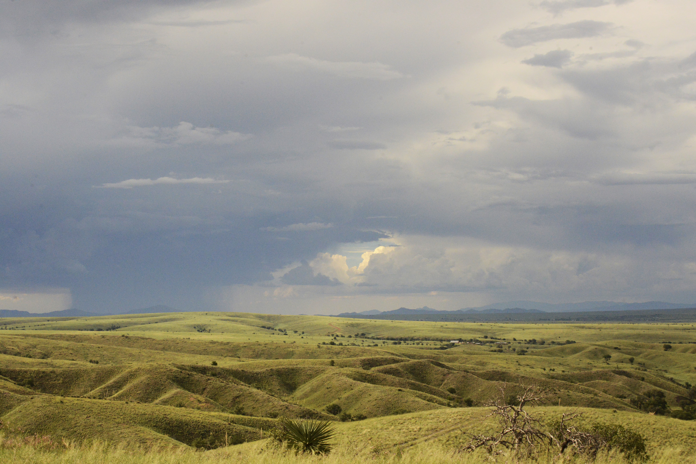
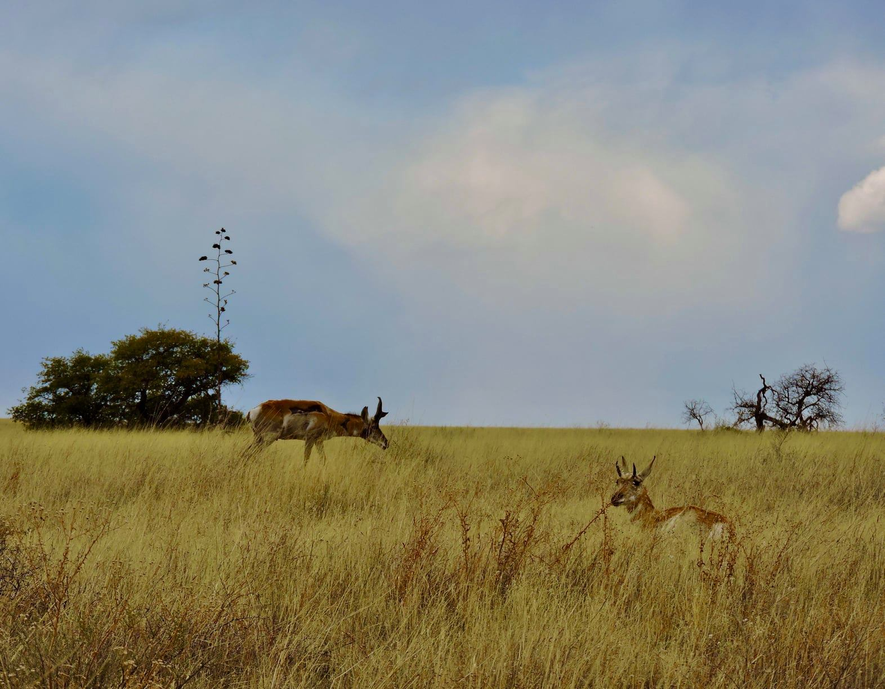
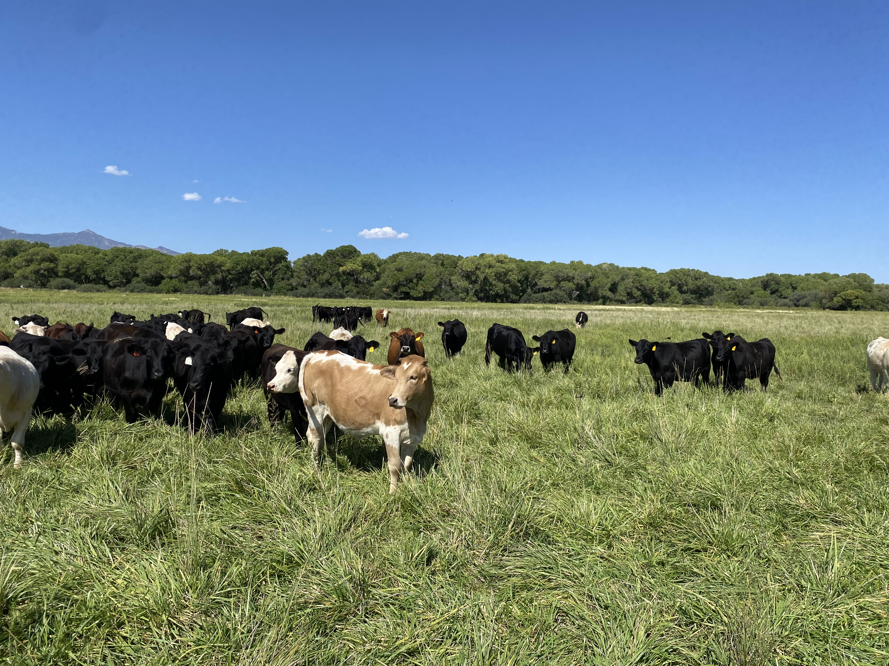

Drought Resilience
Groundwater-dependent ecosystems, recharge areas, riparian corridors, and persistent water sources contribute to higher drought resilience.
Open Drought MapParcel-scale resilience across arid watersheds, recharge zones, and working lands.
The Fort Huachuca Sentinel Landscape occupies one of North America's most ecologically diverse desert regions, where military readiness depends on the resilience of interconnected watersheds, grasslands, woodlands, and mountain ecosystems.
Unlike landscapes where resilience is driven by abundant water resources, resilience in southeastern Arizona is defined by how effectively the landscape captures, stores, and conserves water.
This assessment applies the Resilience Scorecard framework to evaluate parcel-scale resilience across the Fort Huachuca Sentinel Landscape. By integrating indicators of drought, extreme heat, and wildfire, the framework identifies areas that consistently maintain ecological function under environmental stress. The resulting maps help partners identify resilience anchors, restoration opportunities, and strategic conservation investments that support both military readiness and long-term landscape health.

Water is the defining resource of the Fort Huachuca Sentinel Landscape.
Across southeastern Arizona, ecosystems, communities, agriculture, and military operations depend on groundwater, mountain-front recharge, springs, cienegas, and the San Pedro River. In this water-limited landscape, resilience depends not simply on where hazards occur, but on whether the landscape can continue functioning through periods of both water scarcity and intense rainfall.
Water limitation is only part of the challenge. During monsoon storms, intense rainfall can fall faster than dry soils can absorb it, generating rapid surface runoff that contributes to erosion, topsoil loss, and sediment delivery to waterways. This creates an important connection between drought, flooding, and land degradation: prolonged dry conditions can reduce the landscape's ability to absorb water when it arrives.
Across all three hazards, water repeatedly emerged as a strong driver of resilience. Groundwater-dependent ecosystems, recharge landscapes, riparian corridors, and persistent water sources consistently supported higher resilience than surrounding areas, particularly under drought and extreme heat. See drought map
Four spatial patterns reveal how water, topography, fire, and overlapping landscape pressures shape resilience across the Fort Huachuca Sentinel Landscape.
Higher resilience clusters around the San Pedro River, Las Cienegas, spring complexes, mountain-front recharge zones, and groundwater-dependent ecosystems. These areas help maintain water availability and ecological function during prolonged drought.
See drought mapHigher elevations, greater vegetation cover, and persistent waterways create cooler refuges from extreme heat. These features contrast with the generally lower thermal resilience of the basin floor.
See extreme heat mapGrasslands, shrublands, and woodlands adapted to periodic burning can retain resilience. Vulnerability increases where repeated fire, development, infrastructure, and other stressors overlap.
See wildfire mapAreas of lower resilience highlight where groundwater decline, increasing well density, development pressure, altered hydrology, erosion, and habitat fragmentation may create opportunities for restoration or targeted management. At the same time, areas of high resilience can represent important conservation priorities where existing landscape function should be protected before it is lost.



The Scorecard moves beyond showing where resilience is high or low. It helps partners understand why resilience varies across the landscape and where different conservation and management strategies may provide the greatest benefit.
At Fort Huachuca, the three hazard assessments point toward complementary priorities. Drought and extreme heat emphasize the importance of water availability, recharge, riparian systems, and thermal refugia, while wildfire reveals where fire-adapted landscapes remain resilient and where repeated disturbance and development increase vulnerability. Explore the maps below
Protect groundwater recharge areas, springs, riparian corridors, cienegas, and other water-dependent systems while supporting infiltration, soil retention, and watershed function during both drought and intense rainfall.
Focus conservation and restoration where connected watersheds, vegetation, and natural infrastructure can maintain ecological function across multiple stressors.
Distinguish resilient fire-adapted systems from areas where repeated wildfire, development, infrastructure, and other pressures compound vulnerability.
Use parcel-scale resilience alongside easement priorities, compatible land-use planning, and other conservation information to support long-term military readiness.



Military readiness at Fort Huachuca depends on landscapes beyond the installation boundary. Groundwater, recharge areas, riparian corridors, and fire-adapted ecosystems function as natural infrastructure, supporting water availability, moderating extreme conditions, and maintaining compatible land uses across the Sentinel Landscape.
Protecting and strengthening these systems supports both long-term military readiness and landscape resilience.
Compare parcel-level resilience to drought, extreme heat, and wildfire. Scores range from Very Low to Very High and reveal how different landscape characteristics influence resilience to each environmental stressor.
Groundwater-dependent ecosystems, recharge areas, riparian corridors, and persistent water sources contribute to higher drought resilience.
Open Drought MapHigher elevations, vegetation, topographic complexity, and persistent waterways create thermal refugia against extreme heat.
Open Extreme Heat MapFire-adapted ecosystems can retain resilience, while repeated wildfire exposure and overlapping development pressures increase vulnerability.
Open Wildfire MapExplore the military mission, water resources, desert ecosystems, conservation priorities, and partnerships that define the Fort Huachuca Sentinel Landscape.